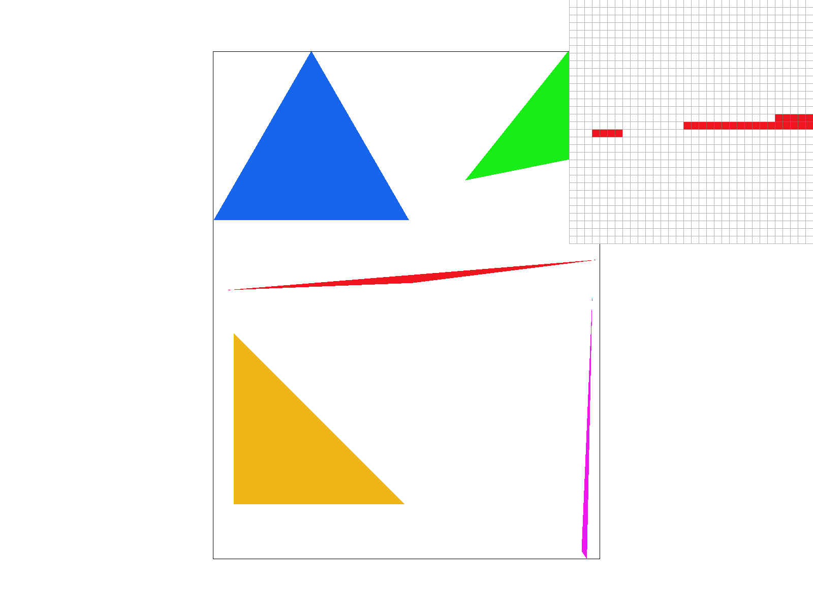
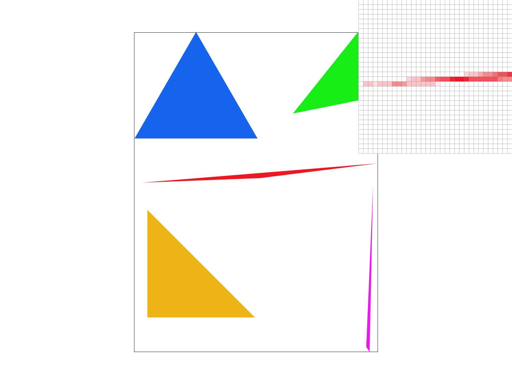
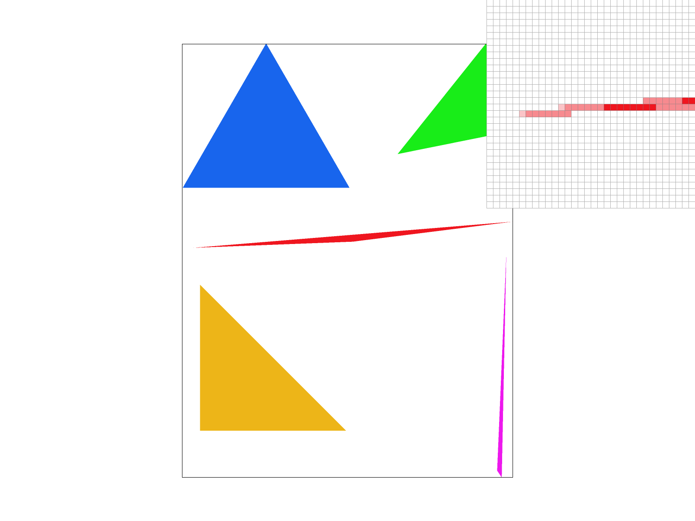

CS184/284A Spring 2025 Homework 1 Write-Up
Overview
In Homework 1, I have implemented a complete 2D graphics rasterizer that demonstrates fundamental computer graphics principles from the ground up. The system includes triangle rasterization with point-in-triangle testing using edge functions, supersampling anti-aliasing to reduce jagged edges, and optimized performance variants with incremental algorithms. I built a hierarchical transformation system supporting complex SVG scenes with nested groups, rotations, and scaling, exemplified by an expressive robot character that showcases dynamic poses through matrix composition. The advanced texture mapping implementation features both nearest-neighbor and bilinear interpolation for pixel sampling, along with a complete mipmap system supporting three level sampling modes: basic texture sampling (L_ZERO), automatic mipmap level selection (L_NEAREST), and trilinear filtering (L_LINEAR) for smooth transitions. This project provided me insights into the translation of theoretical graphics concepts into practical visual systems, starting from sampling theory and aliasing reduction to hierarchical transformations and level-of-detail management to build a system that mirrors the structure of modern GPU rendering pipelines.Task 1: Drawing Single-Color Triangles
Algorithm Implementation
The triangle rasterization algorithm that I implemented follows a systematic approach to efficiently render triangles by testing pixel coverage within a bounded region.
Bounding Box Calculation
The algorithm begins by determining the smallest axis-aligned rectangle that contains the entire triangle. This involves computing the minimum and maximum x and y coordinates across the three vertices. Restricting rasterization to this region avoids unnecessary computation outside the triangle's extent.
Edge Function Setup
For each edge of the triangle, an edge function is defined using the expression:
E(x,y) = (x - x0)(y1 - y0) - (y - y0)(x1 - x0)Where (x0,y0) and (x1,y1) are the edge endpoints.
This function determines whether a point lies on the "inside" or "outside" of an edge, which is important for determining pixel coverage. The edge function returns a positive value for points on one side of the edge and a negative value for points on the other side.
Pixel Iteration and Sampling
The algorithm iterates over every pixel within the bounding box. Instead of testing the pixel's top-left corner,
sampling occurs at the pixel center using coordinates (x + 0.5, y + 0.5),
as required by the specification. This approach improves accuracy and ensures proper coverage testing.
Point-in-Triangle Test
At each sample point, all three edge functions are evaluated. If all three return values with the same sign (either all positive or all negative), the point is inside the triangle. This test works for both clockwise and counter-clockwise winding orders without requiring additional logic.
Supersampling Extension
The rasterizer was extended to support multiple samples per pixel for antialiasing.
Multiple sample values are calculated at fractional offsets within each pixel
and then averaged in resolve_to_framebuffer() to produce smooth antialiased edges.
Algorithm Efficiency
This algorithm is designed to be as efficient as possible without skipping necessary evaluations. In terms of spatial scope, the algorithm never iterates outside the triangle's bounding box. For time complexity, each pixel is tested in constant time, so total cost scales with bounding box area. The algorithm's O(bbox_area) complexity ensures efficient rendering, as each pixel is tested exactly once. Most importantly, there is no wasted computation - every pixel tested might contribute to the final render.
Extra Credit: Performance Optimizations
Beyond the basic bounding box optimization, I implemented several performance improvements in the supersampling rasterization pipeline. Instead of computing edge functions from scratch for each sample point, I implemented incremental evaluation using the fact that edge functions are linear. For horizontal traversal, the edge function value changes by a constant (y1 - y0), and for vertical traversal by -(x1 - x0). This eliminates redundant multiplications and significantly reduces computational overhead.
I also streamlined the sample buffer access pattern to minimize address calculations. By precomputing base indices and using incremental offsets, the implementation reduces the number of arithmetic operations needed for each sample location in the expanded buffer. Additionally, for pixels that are clearly outside the triangle (all edge functions have the same negative sign), the algorithm can skip processing remaining sub-pixel samples within that pixel, providing performance gains especially for larger triangles with high supersampling rates.
These incremental algorithm optimizations demonstrate how mathematical properties of geometric functions can be leveraged to achieve significant performance improvements while maintaining identical visual output to the basic implementation.
Task 1 Screenshot

Task 2: Antialiasing by Supersampling
Supersampling Comparison Screenshots
|

|
|
|

|

|
Algorithm Overview
The supersampling algorithm uses high-resolution sampling where for each pixel, √sample_rate × √sample_rate samples are taken, arranged in a uniform grid pattern within the pixel. For sample buffer storage, each sub-pixel sample is stored in a high-resolution sample_buffer that is sample_rate times larger than the final framebuffer. Finally, during downsampling, after rendering, resolve_to_framebuffer() averages all sub-pixel samples to compute the final pixel color.
Data Structure Modifications
The implementation required several key modifications to support supersampling:
Sample Buffer Expansion
The sample_buffer was expanded from width × height to width × height × sample_rate to store all sub-pixel samples. This allows independent storage of each sample within a pixel before final averaging.
Rasterization Pipeline Changes
Triangle rasterization now iterates through all sub-pixel samples within each pixel. For each sub-pixel location (x + dx, y + dy), where dx and dy are fractional offsets, the point-in-triangle test is performed and results stored in the expanded sample buffer.
Resolution and Averaging
The resolve_to_framebuffer() function averages all samples within each pixel to compute the final color. This averaging process naturally produces intermediate gray levels that smooth out jagged edges, creating the antialiasing effect.
Why Supersampling Works
Supersampling is effective because it addresses the fundamental cause of aliasing: insufficient sampling frequency. By taking multiple samples per pixel and averaging them, we effectively increase the sampling rate and reduce high-frequency artifacts. The averaging process acts as a low-pass filter, smoothing out sharp transitions and creating more visually pleasing results.
Results Analysis
The comparison screenshots demonstrate the progressive improvement in edge quality as sample rate increases. At sample rate 1, triangle edges appear jagged with harsh pixel-level transitions. Sample rate 4 introduces intermediate gray values along edges, significantly reducing jaggedness. Sample rate 16 produces very smooth edges with clean color gradients. These results occur because supersampling captures partial pixel coverage at triangle edges, creating intermediate gray values that smooth the visual transition from triangle interior to background. Each increase in sample rate provides diminishing returns, but the visual improvement is clear, especially along diagonal edges and thin geometric features.
Task 3: Transforms
Robot Design Implementation
The Cubeman implementation demonstrates hierarchical transformations through a robot character in a dynamic, colorful pose. The robot is tilted 15 degrees from vertical and performs an energetic waving gesture with asymmetric arm positioning. One arm is raised upward in a greeting motion while the other extends outward, and the robot's head is dramatically tilted, creating a playful and expressive character that effectively demonstrates complex hierarchical transformations.
My robot uses a vibrant multi-colored scheme to create visual interest and distinguish body parts. The head is rendered in bright green, the torso in blue, the left arm in pink gradient tones, and the right arm in cyan shades. The left leg uses yellow-orange colors while the right leg employs purple hues, creating a rainbow robot aesthetic.
Hierarchical Transformation Implementation
The dynamic pose demonstrates complex hierarchical transformations through multiple nested rotation and scaling operations. The entire robot is rotated rotate(15) for the tilted stance. The head combines translate(0 -100), rotate(75), and scale(.6 .6) for dramatic positioning. The left arm uses translate(-90 -60) rotate(-30) for the raised greeting pose, while the right arm employs translate(90 -20) rotate(45) with an additional forearm rotation rotate(30) for the waving gesture. The right leg includes rotate(-10) for asymmetric stance. This multi-layered approach illustrates how expressive character poses emerge from the thoughtful composition of geometric transformations.
Task 4: Barycentric coordinates
Algorithm Implementation
The barycentric coordinate implementation extends the triangle rasterization approach from Task 1 to enable smooth color interpolation across triangle surfaces. The algorithm reuses the core triangle rasterization logic while adding coordinate calculation and color blending capabilities.
For each sample point within a triangle, barycentric coordinates are calculated using the area method. These coordinates are then used to interpolate vertex colors using the formula α * c0 + β * c1 + γ * c2. The implementation supports both single sampling and supersampling modes, maintaining compatibility with the antialiasing framework from Task 2. Degenerate triangles are handled through area validation to prevent numerical instabilities.
Barycentric Coordinates Theory
Barycentric coordinates (α, β, γ) provide a method for representing any point P inside a triangle as a weighted combination of the three vertices:
P = α * A + β * B + γ * C
Where α + β + γ = 1
The coordinate system has several important properties. In terms of vertex influence, each coordinate represents the "influence" of that vertex on the point. For normalized range, values range from 0 to 1, where 1 means the point coincides with that vertex. The distance relationship means that points closer to a vertex have higher coordinate values for that vertex. Finally, for linear interpolation, any attribute can be smoothly interpolated using the same weights.
Visual Demonstration
To illustrate barycentric coordinates visually, we consider a triangle with three differently colored vertices. Each point inside the triangle displays a color that is the weighted average of the three vertex colors- the weights being the barycentric coordinates themselves.
Color Interpolation Process
For color interpolation, the barycentric coordinates serve as blending weights:
Color(P) = α * Color(A) + β * Color(B) + γ * Color(C)
This approach creates smooth color gradients across the triangle surface, with colors blending naturally from vertex to vertex. The resulting interpolation maintains visual continuity while providing precise control over color distribution within each triangle.
Task 5: "Pixel sampling" for texture mapping
Implementation Summary
Textured Triangle Rasterization
The textured triangle rasterization approach reuses the barycentric coordinate approach from Task 4, interpolates texture coordinates (u, v) using barycentric weights, constructs a SampleParams struct and calls tex.sample() at each pixel, and supports both single sampling and supersampling modes.
Nearest Neighbor Sampling
Nearest neighbor sampling converts normalized UV coordinates to texel space, rounds to the nearest integer texel coordinates, and clamps values to valid texture bounds before sampling a single texel.
Bilinear Sampling
Bilinear sampling identifies the four surrounding texels in texture space, computes interpolation weights based on fractional UV components, and performs 2D linear interpolation across the four sampled texel colors.
Pixel Sampling Explanation
Pixel sampling refers to the method by which texture information is retrieved and used to shade fragments during rasterization. To determine the correct color at each pixel, we first compute the corresponding point in the texture using barycentric interpolation of the UV coordinates. We then apply one of two sampling methods (nearest or bilinear) to select the final color.
The implementation uses a SampleParams struct that captures UV coordinates and sampling resolution. This structure is passed to the tex.sample() function, which handles both nearest and bilinear methods depending on the selected sampling mode. The same sampling logic is applied for both single-pixel sampling and supersampling cases.
Comparison of Sampling Methods
Below are four screenshots taken using the 'S' hotkey from a texture-mapped SVG file where the difference between sampling methods is clearly visible.
Discussion
Bilinear sampling produces smoother results by blending colors from adjacent texels, which significantly reduces aliasing, especially along diagonal or high-frequency texture regions. Nearest neighbor, on the other hand, selects a single texel and can result in blocky artifacts and visible jaggedness when texture resolution is low or under strong transformations.
The difference between nearest and bilinear sampling is most pronounced when textures are magnified (zoomed in) or when viewing high-frequency texture details at oblique angles. In the screenshots above showing the Campanile and surrounding architecture, the contrast is particularly evident in several key areas: the fine architectural details of the Campanile facades show much smoother transitions with bilinear sampling, the diagonal edges of the tower structure appear less jagged, and the textural elements in the foliage areas demonstrate how bilinear interpolation creates more natural color gradations compared to the harsh pixel boundaries visible in nearest neighbor sampling.
The comparison becomes especially clear when examining the granular visual details of the tower's gaps and stone textures, where nearest neighbor sampling creates visible blockiness that bilinear sampling effectively smooths out. Supersampling helps mitigate aliasing in both methods, but bilinear sampling generally outperforms nearest neighbor in producing visually smooth transitions and better overall image quality, particularly for complex architectural textures like those shown in the image of the Campanile.
Task 6: "Level sampling" with mipmaps for texture mapping
Implementation Overview
The level sampling implementation provides mipmap support with three sampling modes. L_ZERO always uses full resolution (level 0), L_NEAREST calculates appropriate mipmap level and rounds to nearest integer, and L_LINEAR uses trilinear sampling to interpolate between two adjacent mipmap levels.
Level Calculation
Mipmap levels are calculated using texture coordinate derivatives to determine the rate of texture change across screen pixels. The implementation computes the UV coordinate gradients for neighboring pixels and uses the maximum gradient magnitude to select the appropriate detail level.
Specifically, the algorithm calculates the derivatives du/dx, du/dy, dv/dx, and dv/dy using finite differences between adjacent screen pixels. The mipmap level is then determined using the formula level = log2(max(||∇u||, ||∇v||)), where the gradient magnitudes represent the rate of texture coordinate change. This approach prevents aliasing during texture minification by pre-filtering high frequencies that would otherwise cause temporal artifacts.
Sampling Method Comparison
The three techniques (pixel sampling, level sampling, and supersampling) offer different tradeoffs:
| Technique | Speed | Memory Usage | Antialiasing Power |
|---|---|---|---|
| Pixel Sampling (Nearest vs Bilinear) | Nearest: Fast Bilinear: Moderate |
Same | Bilinear provides texture smoothing |
| Level Sampling (L_ZERO, L_NEAREST, L_LINEAR) | L_ZERO: Fast L_NEAREST: Moderate L_LINEAR: Slower |
Higher (mipmap storage) | Reduces aliasing from minification |
| Supersampling (1x, 4x, 16x) | Decreases significantly with sample rate | Scales linearly with sample rate | Strongest antialiasing effect |
Task 6 Screenshots


Task 7: Extra Credit - Creative SVG Artwork
Procedural Portrait Generation
This creative artwork demonstrates a procedural approach to SVG generation through a Python-based portrait creation system. Rather than manually crafting SVG elements, the implementation uses algorithmic generation to create variations of a stylized portrait with mathematical precision and controlled randomization in order to generate a display image representing Sabrina Carpenter.
The artwork features a portrait composition with several algorithmically generated elements. Curly hair generation uses mathematical functions including sine waves and controlled randomness to create natural-looking zigzag patterns that simulate volumetric curls. Parametric facial structure employs polygon-based construction with precise coordinate calculations to maintain natural proportions. Systematic color palettes implement three distinct teal-based color schemes with coordinated relationships between hair, outfit, and background colors. Dynamic scene elements include procedurally placed musical notes with random positioning and rotation, plus teal stage lighting effects with varying opacity.
Technical Implementation
The implementation uses Python to generate SVG code through mathematical algorithms. Hair strand generation employs functions like generate_curly_hair_strand() that use modular arithmetic and sine functions to create realistic curl patterns with controlled randomness. Layered polygon construction builds complex shapes through coordinate transformation and point generation, with hair requiring up to 280-point polygons for smooth curves. Color palette management implements three distinct teal-based schemes using RGB color theory to ensure visual harmony. Procedural scene composition uses random number generation with bounded parameters to place musical notes, stage lights, and sparkle effects while maintaining compositional balance.
Algorithmic Features
The generation system demonstrates several computational graphics techniques. Curve generation uses mathematical functions including math.sin(i * 0.3) * 10 to create natural hair flow patterns. Controlled randomization employs functions like random.randint(-3, 3) to add organic variation while maintaining structural integrity. Coordinate transformation implements systematic point generation for complex polygons, with zigzag patterns created through alternating directional logic. Variation generation produces multiple unique artworks through parameterized color schemes and randomized element placement, demonstrating how algorithmic approaches can create diverse artistic outputs from a single codebase.
This implementation showcases how computational methods can enhance artistic creation, using mathematical precision to generate complex visual compositions while incorporating controlled randomness to achieve natural, organic aesthetics.